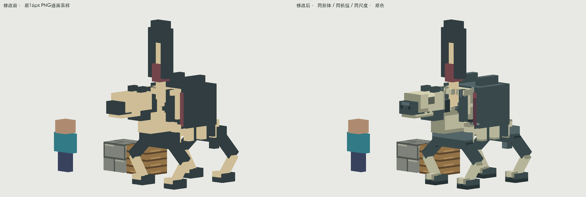
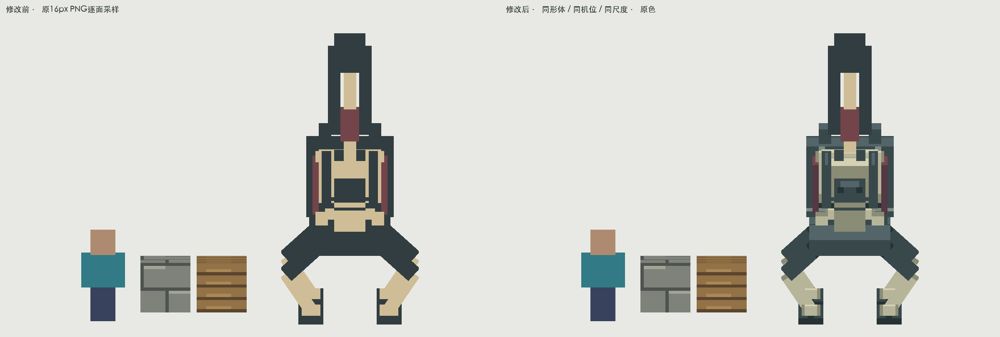
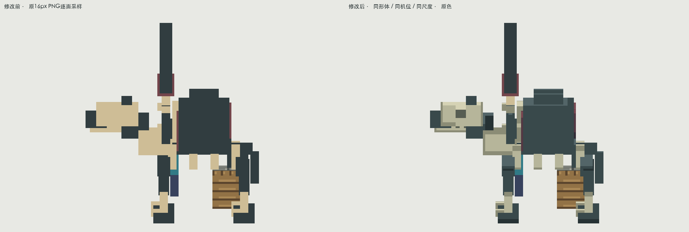
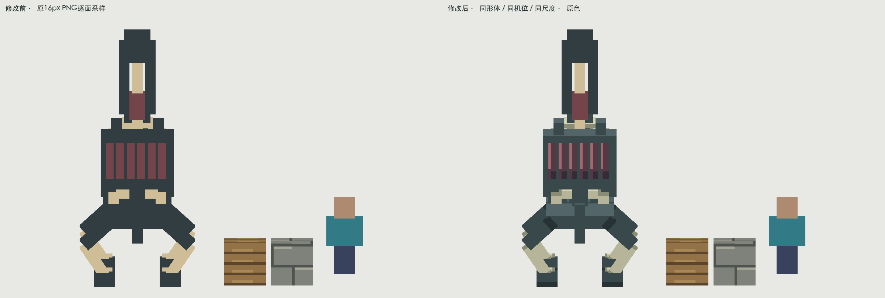
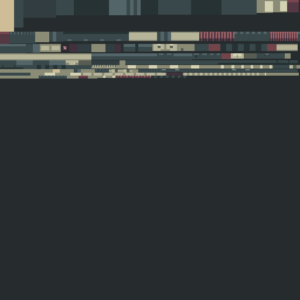

殉节盲帅 · 公孙无妄 · 像素材质补完
原来的4个纯色色岛让骨、旧铁和内龛连成平面。这次重绘盲面、马骨眼窝与颌缘，压低外框和足端，分开哀带、铁壳和誓物。武器保持原色与原结构。
暮色Wraith的浅脸与暗衣、Lich的头胸优先；Alex’s Mobs Froststalker的头颈与支撑分区；灾变Draugr的骨与暗甲对比。只借鉴分区方法，未使用外部像素。
全部画面为实际PNG逐面采样的软件预览；含原色与基础漫反射，没有粒子/发光。不是游戏截图。已验证原生资源解析与隔离重新导出；整包构建、实际客户端加载和战斗待验证。正前方现有兵器在部分角度仍会遮住盲面；原形体与动作未重做，未以贴图声称消除了几何遮挡。
骨马负龛
dynasty:gongsun_wuwang同机位、同尺度；旁置玩家1.8m与一格石砖/木材参照。尺寸、骨架、攻击时间轴保持原样。

左：修改前；右：本轮。点图看原尺寸。正面、侧面、背面对照

front · 同条件前后
side · 同条件前后
back · 同条件前后原色、基础光照与近景
PNG原尺寸、整数倍放大、逐面UV

原始512×512图集。有效面按模型单位绘制，并非放大旧图。灰度、暗处与玩家观察距离
完整代表动作 · 固定相机
每条覆盖开始到恢复，共24帧。原动作不改时序；离线解释器不能代替游戏动画和服务器接触验证。